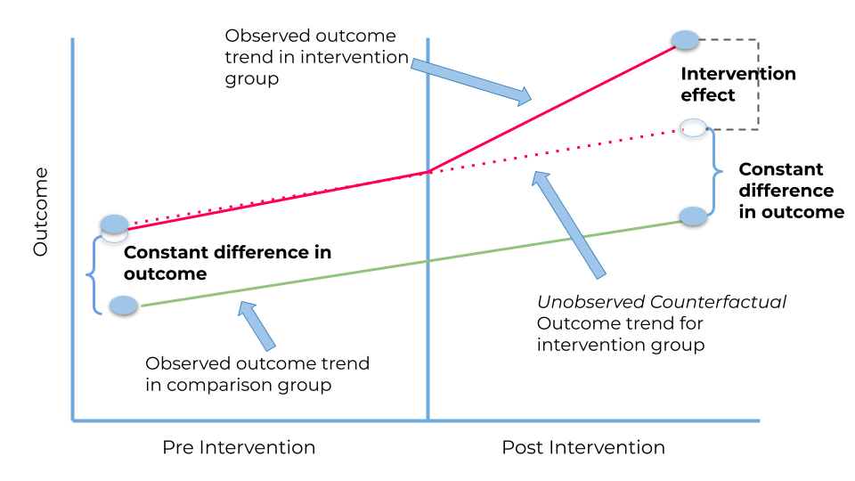

20 D5. Difference-in-Differences
20.1 About
Topics covered:
- The 2×2 DiD estimator
- Parallel trends identification assumption and pre-trends testing
- Two-Way Fixed Effects (TWFE) regression
- Event study specifications
- Staggered treatment timing and modern DiD estimators (Callaway-Sant’Anna, Sun-Abraham)
20.2 Lecture Notes
20.3 The DiD Estimator
Difference-in-Differences (DiD) compares the change in outcomes for a treated group over time to the change for an untreated (control) group, exploiting a natural or policy experiment.
Setup
- Two periods: pre-treatment (\(t=0\)) and post-treatment (\(t=1\))
- Two groups: treated (\(D_i=1\)) and control (\(D_i=0\))
- Outcome: \(y_{it}\)
The 2×2 DiD estimator is:
\[\hat\tau_{DiD} = \underbrace{(\bar{y}_{1,\text{post}} - \bar{y}_{1,\text{pre}})}_{\text{change in treated}} - \underbrace{(\bar{y}_{0,\text{post}} - \bar{y}_{0,\text{pre}})}_{\text{change in control}}\]
This differences out time-invariant selection bias (between treated and control) and common time trends.

20.4 Parallel Trends Assumption
The identifying assumption is:
\[E[Y_{it}(0) \mid D_i=1, t=1] - E[Y_{it}(0)\mid D_i=1, t=0] = E[Y_{it}(0)\mid D_i=0, t=1] - E[Y_{it}(0)\mid D_i=0, t=0]\]
In words: In the absence of treatment, the treated and control groups would have followed the same trend over time.
This is not directly testable (we don’t observe \(Y_{it}(0)\) for the treated group post-treatment), but can be assessed via: - Pre-treatment trend plots - Placebo tests using earlier periods - Event study specifications
20.5 Regression Formulation
The standard DiD regression is:
\[y_{it} = \alpha + \beta_1 D_i + \beta_2 \text{Post}_t + \tau\,(D_i \times \text{Post}_t) + \varepsilon_{it}\]
where \(\tau\) is the DiD coefficient (Average Treatment Effect on the Treated, ATT).
With panel data and multiple periods, the Two-Way Fixed Effects (TWFE) estimator absorbs unit and time effects:
\[y_{it} = \alpha_i + \alpha_t + \tau\, D_{it} + \varepsilon_{it}\]
20.6 Event Study Specification
To test parallel pre-trends and estimate dynamic treatment effects:
\[y_{it} = \alpha_i + \alpha_t + \sum_{k \neq -1} \tau_k \,\mathbf{1}[t - E_i = k] + \varepsilon_{it}\]
where \(E_i\) is the period of treatment for unit \(i\), and \(k = t - E_i\) is relative time. The reference period is \(k=-1\) (one period before treatment). Coefficients \(\tau_k\) for \(k<0\) (pre-treatment) should be near zero under parallel trends.
20.7 Staggered DiD
When treatment is staggered — different units are treated in different periods — the simple TWFE estimator can produce misleading results (Callaway & Sant’Anna 2021; Goodman-Bacon 2021; Sun & Abraham 2021). TWFE implicitly uses already-treated units as controls, which biases estimates when treatment effects are heterogeneous.
Modern approaches: - Callaway-Sant’Anna: estimate cohort-specific ATTs, aggregate appropriately - Sun-Abraham: interaction-weighted estimator - Stacked DiD
20.8 Standard Errors
Inference in DiD must account for: - Autocorrelation within unit over time (Bertrand, Duflo & Mullainathan, 2004): cluster SEs at the unit level - With few treated units or clusters, cluster SEs may be unreliable → wild cluster bootstrap
20.9 References
Angrist, J. D. and Pischke, J.-S. (2009). Mostly Harmless Econometrics. Princeton University Press, chapters 5.
Callaway, B. and Sant’Anna, P. (2021). “Difference-in-Differences with Multiple Time Periods.” Journal of Econometrics, 225(2), 200–230.
Cameron y Trivedi (2005), chapter 24.